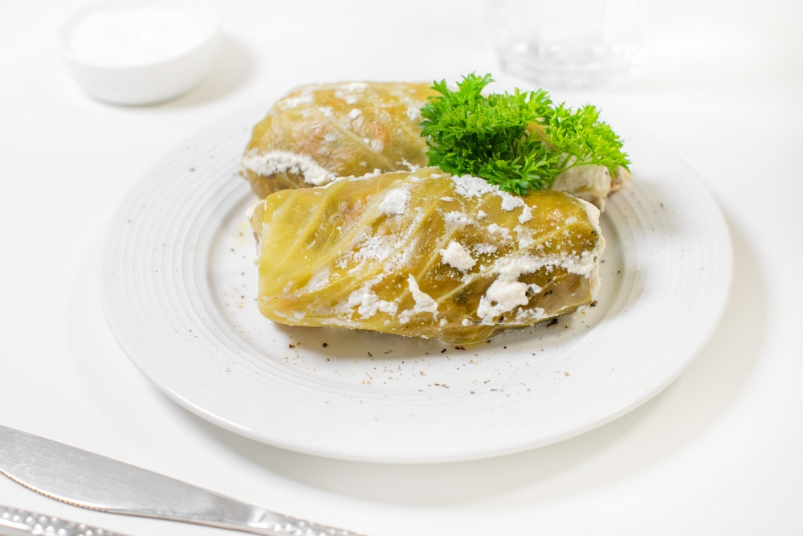

| Название | Моя оценка | Рецепт | Фото |
|---|---|---|---|
| Драники картофельные | 10/10 | Драники картофельные рецепт классический | |
| Борщ | 9/10 | Классический борщ со свеклой и капустой: пошаговый рецепт | |
| Голубцы | 8/10 | Голубцы в сметанном соусе на сковороде |  |
| Манты | 7/10 | Классические манты на пару | |
| Пельмени | 6/10 | Домашние пельмени: рецепт приготовления вручную |